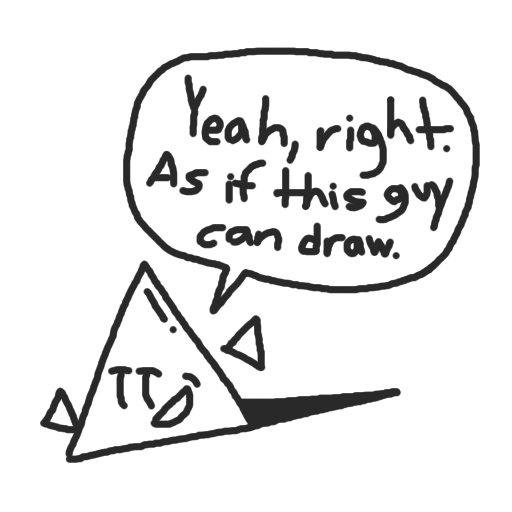

omg are you a drawer?
Like making games, drawing is just about as fun, even if I don't do it often. I don't use any fancy schmancy tools or software, just Krita and a computer mouse.
Well, actually, the pieces you see below were actually made in Scratch. Yeah, I'm one of those guys. I don't look back on these pieces all too fondly, but they gave me an excuse to draw my characters.
Art is cool, and you don't need some art class or professional training to have fun with it. Though, I'll be practicing in Krita from now on, since Scratch isn't very good. Feel free to see what I've made, and check out the extra pages shown at the bottom.

the art of arts to art the art art art
2026
Well... this is awkward.